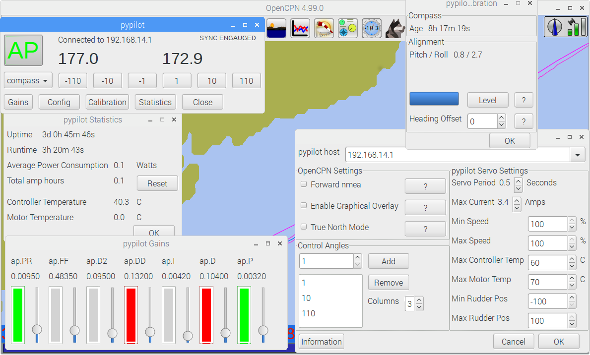
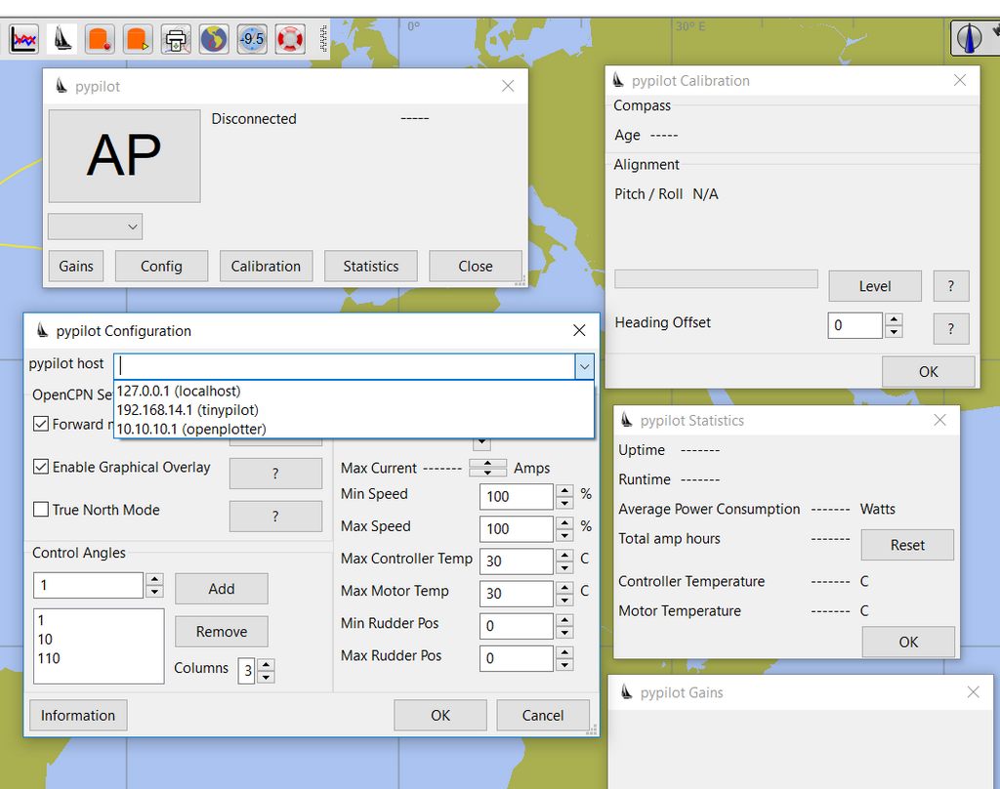

Pypilot Autopilot
Links
-
Maintenance Source: https://github.com/rgleason/pypilot_pi
-
Download:https://opencpn.org/OpenCPN/plugins/pypilot.html
1. What and Why
The pypilot plugin provides an interface to the free software autopilot pypilot. Control, configure and calibrate the autopilot from OpenCPN.
The Pypilot_pi interface plugin will work with any operating system running opencpn (Linux, Windows, MacOS, Android are available). The Pypilot_pi interface plugin is separate and distinct from the plugin “autopilot_route_pi”.
The pypilot server that pypilot_pi connects to, so far typically runs on raspberry pi, but it can work on orange pi or potentially other systems as well.
Note: OpenCPN can communicate with pypilot server already via nmea to receive compass heading, and to autopilot, so this plugin is not strictly required.
This plugin allows for configuration and tuning of the autopilot in ways not possible through basic nmea0183 messaging. The plugin also allows for graphical overlays of the autopilot settings directly onto the chart.

2. Installation
The OpenCPN Manual has general information in Plugin Download, Install and Enable for installing this plugin.
3. Other Information
OpenCPN Plugin for Pypilot Autopilots An OpenSource Marine Autopilot.
-
Github Repository (Python & C++)
-
Example: Pypilot is tested and working on a trimaran sailing at 15 knots.
-
Example: Video: Pypilot on Princess Mia
4. Capable of steering under sail in harbors.
The autopilot route plugin capable of steering under sail in harbors
-
Example: Hydraulic Installation: S/V Phoenix [Ketch with Pypilot]
5. PyPilot Forums
Sean D’Epagnier’s PyPilot AutoPilot using raspberry zero-W or orange,
-
IMU with
-
Optional user interface LCD and keypad, gps and weather sensors.
Pypilot Webapp if using tinypilot, creates a webserver which provides remote autopilot control through a browser. Trimaran test used rtlsdr IR remote for control. It can use any tv remote, also buttons, or gui program through openplotter.
This Autopilot uses modified and improved versions of SignalK and RTMUlib2. More details are available in the

6. PyPilot Integrated Hardware Shop
-
PyPilot Motor Controller
-
TinyPilot Computer
-
Minimal wind sensor - Wind speed and direction
-
Weather Sensors with Display - Wind and Barometric Pressure
-
The wind sensor uses Davis 6410 Wind instrument
-
Orange pi Zero IMU Hat mpu9255 9DOF inertial sensor
-
Raspberry pi Nokia 5110 LCD Hat
-
Orange pi Nokia 5110 LCD Hat
-
Raspberry pi Zero IMU Hat mpu9255 9DOF inertial sensor
Another favorite rpi from the Tindie Store is dAISy HAT AIS Receiver for Raspberry Pi
Pypilot is free software like Opencpn and it is fully supported by opencpn, and is better supported than any autopilot. It has 2 specialized opencpn plugins designed for it. For the cost of a raspberry pi, some $4 sensors, and a motor controller you can build, or buy for $75 and just use a windshield wiper motor and a belt to the wheel, or if you have a tiller: